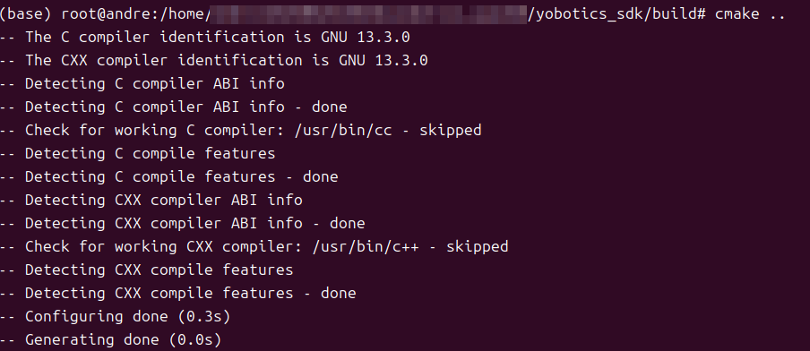

4.2 Build the SDK¶
Dependencies¶
sudo apt-get install -y build-essential cmake liblcm-dev libeigen3-dev
Build¶
cmake -S yobotics_sdk -B yobotics_sdk/build
cmake --build yobotics_sdk/build -j4


A successful build contains:
yobotics_sdk/build/yobot_sport_client
yobotics_sdk/build/yobot_robot_state_client
yobotics_sdk/build/yobot_http_server
yobotics_sdk/lib/libyobotics_sdk.a

LCM URL¶
The SDK uses udpm://239.255.76.67:7667?ttl=255 by default. For cross-machine use or another multicast address:
export YOBOTICS_LCM_URL='udpm://239.255.76.67:7667?ttl=255'

When linking the static library from a business program, you need at least the SDK include directory, libyobotics_sdk.a, LCM, and pthread.
Build Acceptance¶
test -x yobotics_sdk/build/yobot_sport_client
test -x yobotics_sdk/build/yobot_robot_state_client
test -x yobotics_sdk/build/yobot_http_server
test -f yobotics_sdk/lib/libyobotics_sdk.a
| Failure | Check |
|---|---|
| LCM not found | liblcm-dev, find_library search directories, and architecture |
| Header not found | Whether CMake uses yobotics_sdk as the source directory |
| pthread link failure | Whether the system build toolchain is complete |
| Program starts but has no state | Whether YOBOTICS_LCM_URL matches the controller |
This CMake project only builds the SDK static library and three existing examples. It does not build the controller or provide RK3588 packaging/deployment flow.